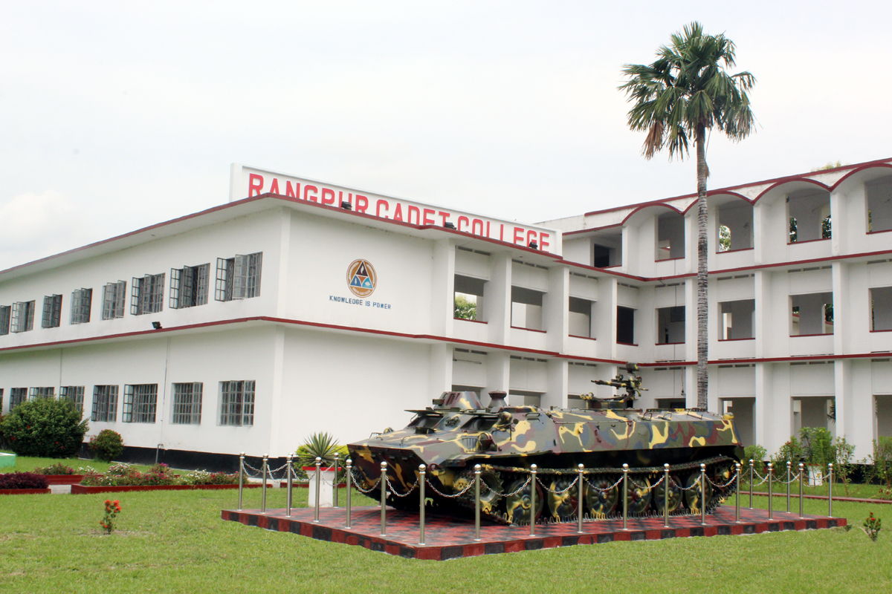
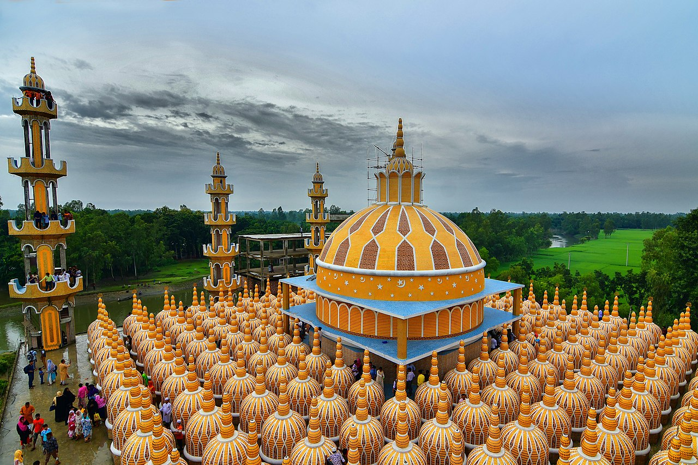

Sylhet Tour
 Writter: Rifat Mahmud
Writter: Rifat Mahmud
Each and every expanse of Bangladesh abounds in greenery, but none can compare with Sylhet. From spinning hills covered in lush green tea gardens and gleaming paddy fields to olive marshlands and reserved forests, Sylhet seems to have been blessed with every possible shade of green one can imagine.
Visit Sylhet is a platform to inspire people to explore greater Sylhet. Our purpose is to deliver growth for Sylhet by attracting visitors and building Sylhet’s reputation as a true destination.
Rongpur Tour

Writter: Rifat Mahmud
one of the major cities in Bangladesh and Rangpur Division. Rangpur was declared a district headquarters on December 16, 1769, and established as a municipality in 1869, making it one of the oldest municipalities in Bangladesh.[3][4] The municipal office building was erected in 1892 under the precedence Raja Janaki Ballav, Senior Chairman of the municipality. In 1890, the Shyamasundari canal was excavated for the improvement of the town. Sharfuddin Ahmed Jhantu was first mayor of Rangpur City Corporation.
The city is located in the northwestern part of Bangladesh.[3] Begum Rokeya University is situated in the southern part of the city. Previously, Rangpur was the headquarters of the Greater Rangpur district. Later, the Greater Rangpur district was broken down into the Gaibandha, Kurigram, Lalmonirhat, Nilphamari and Rangpur districts. In the greater Rangpur region, little economic development took place until the 1990s, mainly because of the yearly flooding the region used to see before the building of the Teesta Barrage. Coal is found near this district. There is a large military cantonment in the vicinity of the city, along with a Ghagot park (under military surveillance), in addition to the famous Carmichael College and Rangpur Zoo in the city. Rangpur is also famous for its handicrafts industry like Shataranji which is recently declared as a GI product of Bangladesh.[5]
Tangail Tour

Writter: Rifat Mahmud
Until 1969, Tangail was part of Greater Mymensingh. Tangail was made a separate district due to suppress Mymensingh District's dominion. Before partition of 6 Upazila incident Mymensingh District's economic growth was higher than the capital Dhaka. To suppress Mymensingh, Greater Mymensingh was separate from their 7 out of 6 Upazila Tangail, Sherpur, Jamalpur, Netrokona (presently known as District) from Mymensingh. And 6 sub-district were promoted to district status to avoid conflict with Dhaka.[citation needed] Thus Tangail district was born. The main rivers that cross the Tangail district are the Jamuna, Dhaleshwari, Jhenai, Bangshi, Louhajang, Langulia, Elongjani, Jugni, Pouli, Fotikjani and the Turag.